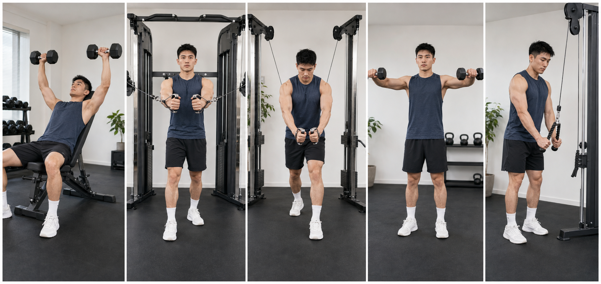
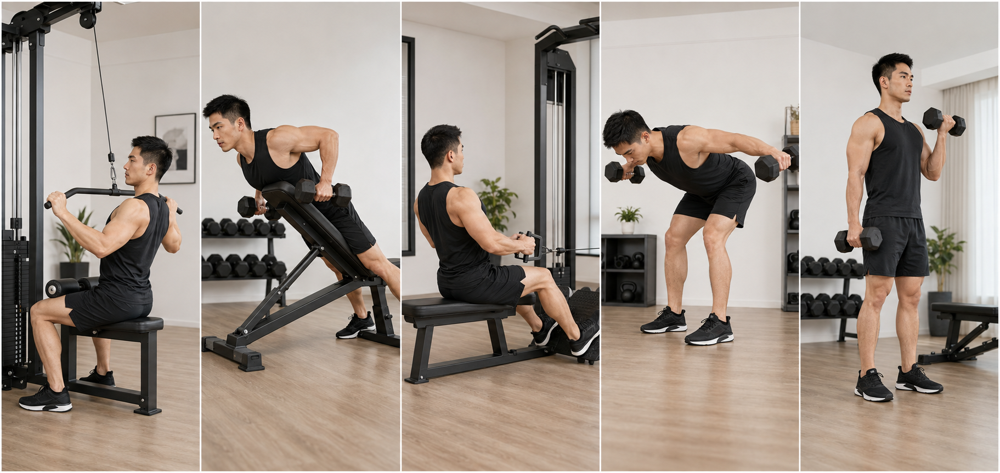
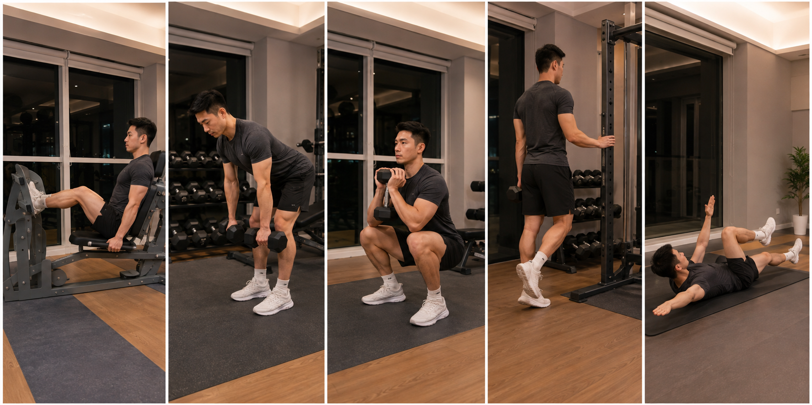

01 · 胸部主动作
上斜哑铃卧推
4 × 8–12 · 90秒上胸为主，同时训练胸大肌和肱三头肌
- 凳面约 25–35°，双脚踩稳地面
- 肩胛骨向后下方收紧，全程贴住凳面
- 肘与躯干约 30–60°，哑铃下放至上胸两侧
- 向上推时呼气，顶部不必让哑铃互撞
避免：凳面过陡变成肩推、耸肩、腰部过度拱起。肩前侧出现尖锐痛立即停止。
建议周一胸、周三背、周五腿。主动作优先，小肌群控制在 10–15 分钟，每组保留约 2 次余力。
先完成 3 个胸部动作，再用侧平举和绳索下压收尾。

上胸为主，同时训练胸大肌和肱三头肌
胸大肌中部，保持持续张力
由上向下夹，偏向胸大肌下部纤维
三角肌中束，补足肩部宽度
肱三头肌，作为推类训练后的补充
先完成一个垂直拉和两个水平拉，再补肩后束与肱二头。

背阔肌为主，辅助训练肱二头肌
中背、菱形肌、背阔肌，减少腰部代偿
中背与背阔肌，练习稳定躯干下的肩胛运动
三角肌后束与上背稳定
肱二头肌，作为拉类动作后的补充
用现场水平腿举机训练前侧，哑铃硬拉补后侧，再完成深蹲、小腿和核心。

股四头肌和臀部，使用你照片里的水平蹬腿机
腘绳肌、臀大肌和髋伸力量
股四头肌、臀部与核心稳定
腓肠肌与比目鱼肌
深层核心稳定和躯干控制
双递进：先选择能标准完成最低次数、最后仍保留 1–2 次余力的重量。当所有正式组都达到次数上限，下次增加最小重量，再从最低次数开始。
热身组不计入正式组。动作走形、关节疼痛或必须借力时，不增加重量。